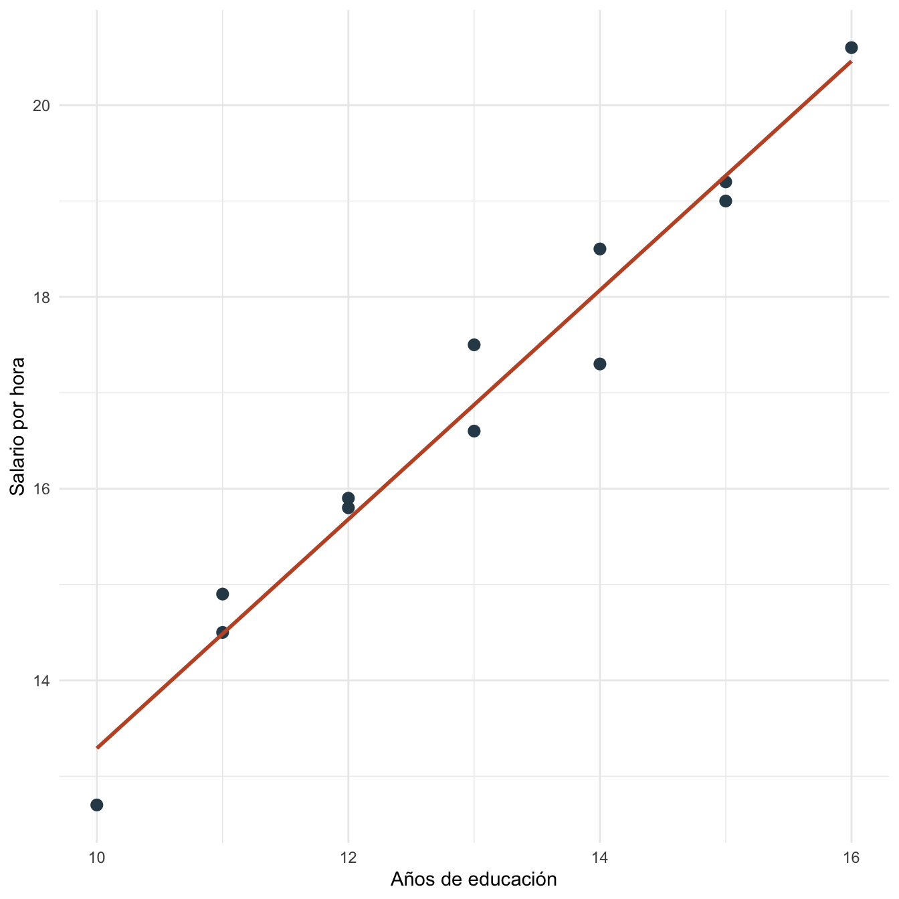

Capítulo 8 Estimación de MCO: práctica
8.1 Objetivos de la práctica
Al finalizar esta práctica podrás:
- Estimar MCO con álgebra matricial en R.
- Comparar la estimación matricial con
lm(). - Reproducir los mismos coeficientes en Stata/Mata y Python/NumPy.
- Interpretar coeficientes, residuos y errores estándar usando resultados calculados en R.
8.2 Pregunta aplicada
Queremos estudiar la asociación entre salario por hora, educación y experiencia en una base pequeña y reproducible.
La pregunta no es solo cuánto vale la pendiente, sino si podemos reconstruir todo el cálculo de MCO desde matrices: \(X'X\), \(X'y\), \(\hat{\beta}\), residuos y errores estándar.
Estimaremos:
\[ \text{salario\_hora}_i = \beta_0+\beta_1\text{educacion}_i+\beta_2\text{experiencia}_i+\epsilon_i. \]
8.3 Datos
Usaremos una base determinística para que R, Stata y Python trabajen exactamente con la misma muestra.
| educacion | experiencia | ajuste | salario_hora |
|---|---|---|---|
| 10 | 2 | -0.5 | 12.7 |
| 11 | 3 | 0.2 | 14.5 |
| 11 | 5 | -0.1 | 14.9 |
| 12 | 4 | 0.4 | 15.8 |
| 12 | 6 | -0.2 | 15.9 |
| 13 | 5 | 0.1 | 16.6 |
| 13 | 7 | 0.3 | 17.5 |
| 14 | 6 | -0.3 | 17.3 |
| 14 | 8 | 0.2 | 18.5 |
| 15 | 7 | 0.5 | 19.2 |
| 15 | 9 | -0.4 | 19.0 |
| 16 | 10 | 0.1 | 20.6 |

Figura 8.1: Relación entre educación y salario por hora en la práctica de estimación
8.4 Estimación en R
Primero estimamos el modelo con álgebra matricial:
Verificamos que el resultado coincide con lm():
| termino | beta_matricial | beta_lm | error_estandar |
|---|---|---|---|
| (Intercept) | 3.9083 | 3.9083 | 1.1716 |
| educacion | 0.8667 | 0.8667 | 0.1302 |
| experiencia | 0.2833 | 0.2833 | 0.1020 |
8.5 Interpretación
La pendiente de educación es 0.867. Manteniendo constante la experiencia, un año adicional de educación se asocia con 0.867 unidades más de salario por hora en esta muestra.
La pendiente de experiencia es 0.283. El \(R^2\) es 0.982 y la SRC es 1.034.
La igualdad entre el cálculo matricial y lm() no demuestra causalidad. Solo verifica que ambos implementan el mismo estimador de MCO sobre la misma base y especificación.
8.6 Estimación en Stata
El mismo ejercicio puede reproducirse en Stata y Mata:
clear
input educacion experiencia ajuste
10 2 -0.5
11 3 0.2
11 5 -0.1
12 4 0.4
12 6 -0.2
13 5 0.1
13 7 0.3
14 6 -0.3
14 8 0.2
15 7 0.5
15 9 -0.4
16 10 0.1
end
gen salario_hora = 5 + 0.75 * educacion + 0.35 * experiencia + ajuste
reg salario_hora educacion experiencia
gen constante = 1
mata:
st_view(Y=., ., "salario_hora")
st_view(X=., ., ("constante", "educacion", "experiencia"))
b = invsym(X'X) * X'Y
e = Y - X*b
s2 = (e'e) / (rows(X) - cols(X))
V = s2 * invsym(X'X)
se = sqrt(diagonal(V))
b
se
endLos resultados esperados son los mismos coeficientes que Stata debe reproducir si usa la misma base y especificación:
| Término | Estimación aproximada | Error estándar aproximado |
|---|---|---|
| Constante | 3.908 | 1.172 |
| Educación | 0.867 | 0.130 |
| Experiencia | 0.283 | 0.102 |
| \(R^2\) | 0.982 |
8.7 Estimación en Python y Google Colab
Para correr esta práctica en Google Colab, abre un cuaderno nuevo y ejecuta:
Luego reproduce el cálculo:
import numpy as np
import pandas as pd
import statsmodels.api as sm
datos_est = pd.DataFrame({
"educacion": [10, 11, 11, 12, 12, 13, 13, 14, 14, 15, 15, 16],
"experiencia": [2, 3, 5, 4, 6, 5, 7, 6, 8, 7, 9, 10],
"ajuste": [-0.5, 0.2, -0.1, 0.4, -0.2, 0.1, 0.3, -0.3, 0.2, 0.5, -0.4, 0.1]
})
datos_est["salario_hora"] = (
5 + 0.75 * datos_est["educacion"] +
0.35 * datos_est["experiencia"] +
datos_est["ajuste"]
)
X = np.column_stack([
np.ones(len(datos_est)),
datos_est["educacion"],
datos_est["experiencia"]
])
Y = datos_est["salario_hora"].to_numpy().reshape(-1, 1)
beta = np.linalg.inv(X.T @ X) @ X.T @ Y
print(beta.ravel())
modelo = sm.OLS(datos_est["salario_hora"], sm.add_constant(datos_est[["educacion", "experiencia"]])).fit()
print(modelo.summary())Los resultados esperados son los mismos coeficientes que Python debe reproducir si usa la misma base y especificación:
| Término | Estimación aproximada | Error estándar aproximado |
|---|---|---|
| Constante | 3.908 | 1.172 |
| Educación | 0.867 | 0.130 |
| Experiencia | 0.283 | 0.102 |
| \(R^2\) | 0.982 |
8.8 Comparación R, Stata y Python
R, Stata/Mata y Python/NumPy aplican la misma fórmula matricial. Si \(X\), \(y\) y la muestra son idénticas, los coeficientes y errores estándar coinciden salvo diferencias mínimas de redondeo.
| Tarea | R | Stata/Mata | Python |
|---|---|---|---|
| Crear \(X\) | cbind(1, x1, x2) |
st_view(X=., ., vars) |
np.column_stack() |
| Estimar \(\hat{\beta}\) | solve(t(X)%*%X)%*%t(X)%*%Y |
invsym(X'X)*X'Y |
np.linalg.inv(X.T @ X) @ X.T @ Y |
| Residuos | Y - X %*% beta |
Y - X*b |
Y - X @ beta |
| Comparar con comando base | lm() |
reg |
statsmodels.OLS() |
8.9 Errores frecuentes en la práctica
- Olvidar la constante. Si el modelo teórico tiene intercepto, la matriz \(X\) debe incluir una columna de unos.
- Comparar modelos con muestras distintas. La fórmula matricial y
lm()solo coinciden si usan exactamente las mismas observaciones. - Invertir una matriz singular. Si hay colinealidad perfecta, \(X'X\) no se puede invertir.
- Confundir SRC con varianza del error. La SRC es \(\hat{\epsilon}'\hat{\epsilon}\); la varianza estimada divide por \(n-K\).
8.10 Ejercicios computacionales
- Elimina la constante de \(X\). ¿Cómo cambian los coeficientes?
- Agrega una variable que sea exactamente
educacion + experiencia. ¿Qué ocurre consolve(t(X) %*% X)? - Cambia la unidad de salario multiplicando
salario_horapor 1000. ¿Qué coeficientes cambian? - Repite el cálculo en Stata/Mata y Python. Verifica que los coeficientes coincidan con R.
- Calcula manualmente
sum(resid_est^2)y compáralo consrc_est.